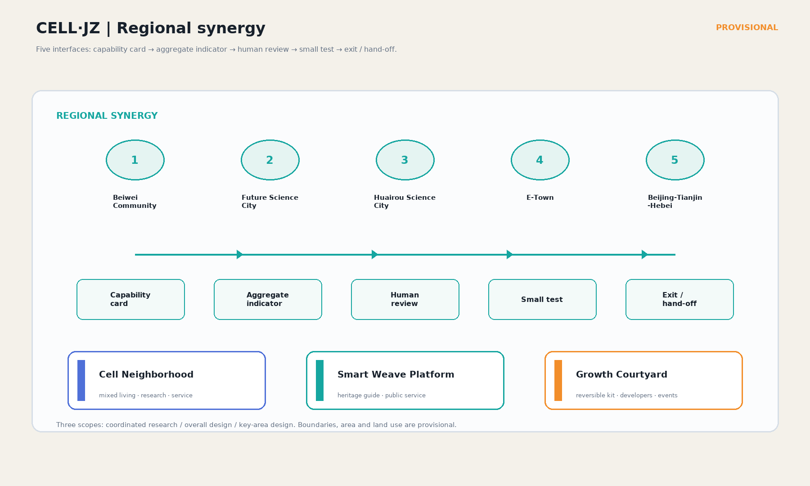
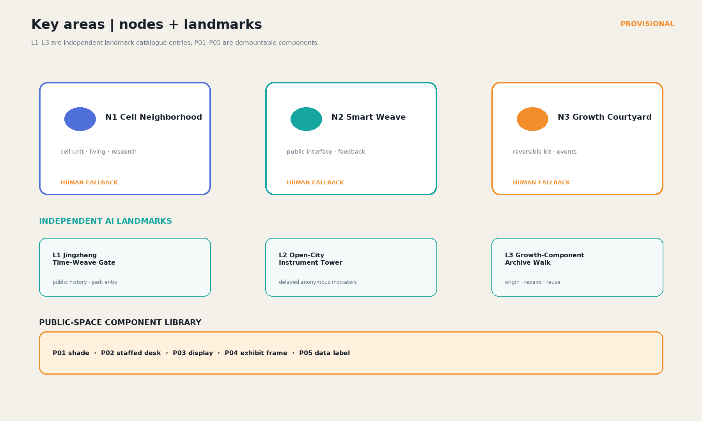
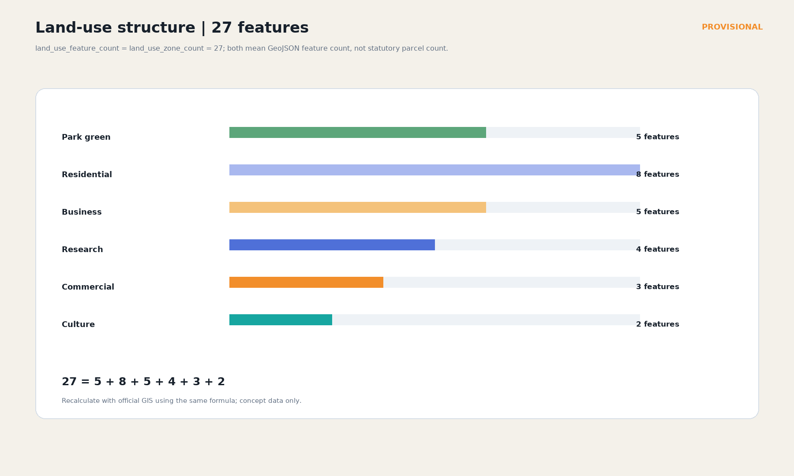
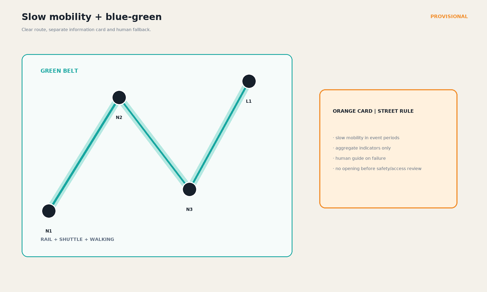
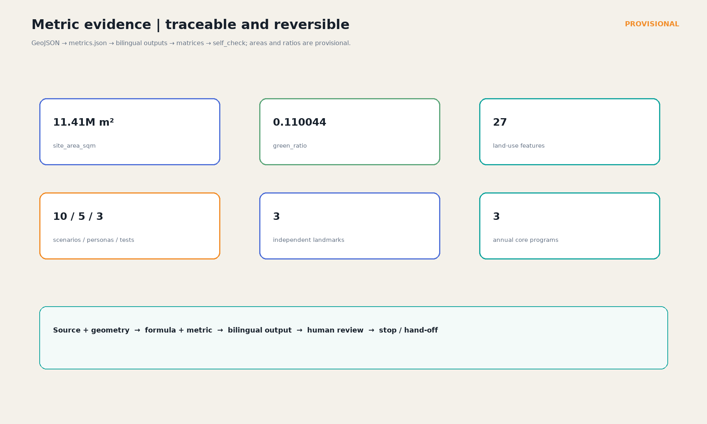

Review boundary：No official redline, partner, award, approval, procurement or construction claim is made. Geometry is for display and machine validation only.
Coordinated research → overall design → key-area design
Evidence anchors E-A1/E-A2/E-G1/E-G2/E-V1/E-Q1 connect the tables, GeoJSON, metrics, bilingual outputs, matrices and checks.
11,412,825.386
site_area_sqm / provisional
0.110044
green_ratio
27
land_use_feature_count = land_use_zone_count
5
personas / S01–S10
Regional synergy interfaces
| Interface | Technical / talent | Scenario/service | Exit |
|---|---|---|---|
| Beiwei Community | edge capability card; guides | S01/S04 service and accessible walking test | no authorization → no device/data |
| Future Science City | compute/model card; short residency | S07/S08 load and morphology test | offline simulation fallback |
| Huairou Science City | public API/data dictionary | cross-city morphology review | paper study without agreement |
| E-Town | de-identified maintenance template | reversible component training | no procurement or order claim |
| Beijing-Tianjin-Hebei | open standards and translator network | international mechanism cards | no third-party mark |
Eight-element AI ecosystem
| Element | Interface | Input | Validation | Boundary |
|---|---|---|---|---|
| Land | 27 provisional features | official classification | planning researcher | no statutory control |
| Space | three nodes + P01–P05 | site/accessibility checklist | design + inspection | demountable |
| Industry / Funding | capability cards and cost categories | small test | industry + sponsor review | no investment claim |
| Talent / Compute | voluntary topics and offline tests | data dictionary | community + technical owner | no identity profile/provider claim |
| Data / Scenario | anonymous aggregates and S01–S10 | minimum fields, exit criteria | ethics + scenario owner | no biometrics/raw traces |
Five personas / S01–S10 mapping
| Persona | Scenarios | Nodes | Channel | Harm / safeguard |
|---|---|---|---|---|
| Resident/caregiver | S01/S05 | Cell / Smart Weave | optional web + staffed desk | digital exclusion; paper fallback |
| Developer/founder | S02/S07 | Cell / Growth | offline sandbox + mentor | data misuse; quota/review |
| Student/maker | S03/S06 | Smart Weave / Growth | display optional + guide | misleading content; source cards |
| Elder/accessibility user | S04/S08 | all nodes | no phone required + human guide | trip/forced digitization; continuous route |
| International visitor | S06/S10 | Smart Weave / L1/L2 | bilingual web optional + paper | translation error; human review |
Ten cards S01–S10 and three industry protocols T01–T03 are specified in proposal.en.md/proposal.md.
Independent landmark catalogue and component library
| ID | Location | Public value | Operations / fallback |
|---|---|---|---|
| L1 Jingzhang Time-Weave Gate | heritage-park entrance | source-traceable public-history timeline | park operator + volunteers |
| L2 Open-City Instrument Tower | Smart Weave edge | delayed anonymous indicators | site operator + ethics group |
| L3 Growth-Component Archive Walk | Growth Courtyard edge | component origin, repairs and reuse | node operator + maintenance team |
P01–P05: shade, staffed desk, low-power display, reversible exhibit frame and open-data label. All are demountable and preserve a human fallback.
Annual operations and international conversion
| ID | Cadence / role | KPI / stop / hand-off |
|---|---|---|
| O1 Open Day | annual; event lead | 3+ public groups; stop on safety/accessibility gap |
| O2 Art Week | annual; culture lead | source/removal date for each piece; no license → no display |
| O3 Cell Market + repair | twice yearly; community/maintenance | closed-loop repairs; unresolved complaints → shrink |
| O4 Developer community | monthly + quarterly demo | version/ethics record; unexplained data → stop |
| O5/O6 Open + international hand-off | scenario owner + communication team | admit → test → disclose → exit; mechanism cards only |
Visual evidence





Rights and provenance
The package-owned geometry, graphics, HTML, PDFs and CELL·JZ mark have a closed author/date/tool/basemap/license chain in sources.json#PACKAGE-GEOMETRY and report/copyright_statement.md. Noto Sans SC is local and embedded for repository display.